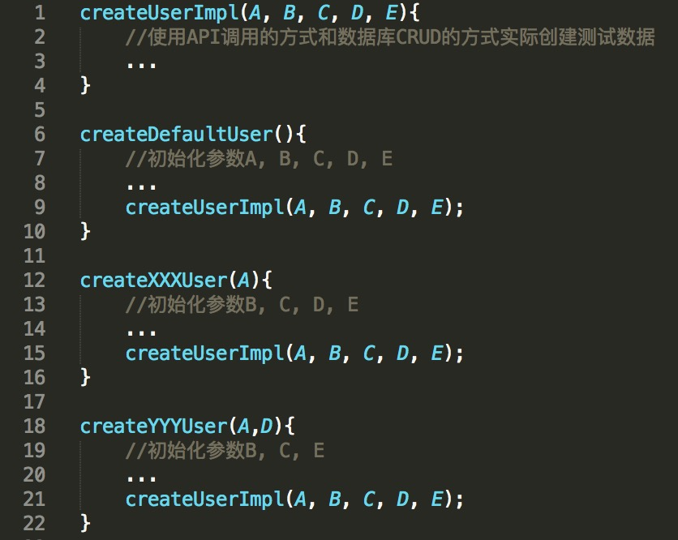

- 00 开篇词 从“小工”到“专家”，我的软件测试修炼之道.md.html
- 01 你真的懂测试吗？从“用户登录”测试谈起.md.html
- 02 如何设计一个“好的”测试用例？.md.html
- 03 什么是单元测试？如何做好单元测试？.md.html
- 04 为什么要做自动化测试？什么样的项目适合做自动化测试？.md.html
- 05 你知道软件开发各阶段都有哪些自动化测试技术吗？.md.html
- 06 你真的懂测试覆盖率吗？.md.html
- 07 如何高效填写软件缺陷报告？.md.html
- 08 以终为始，如何才能做好测试计划？.md.html
- 09 软件测试工程师的核心竞争力是什么？.md.html
- 10 软件测试工程师需要掌握的非测试知识有哪些？.md.html
- 11 互联网产品的测试策略应该如何设计？.md.html
- 12 从0到1：你的第一个GUI自动化测试.md.html
- 13 效率为王：脚本与数据的解耦 + Page Object模型.md.html
- 14 更接近业务的抽象：让自动化测试脚本更好地描述业务.md.html
- 15 过不了的坎：聊聊GUI自动化过程中的测试数据.md.html
- 16 脑洞大开：GUI测试还能这么玩（Page Code Gen + Data Gen + Headless）？.md.html
- 17 精益求精：聊聊提高GUI测试稳定性的关键技术.md.html
- 18 眼前一亮：带你玩转GUI自动化的测试报告.md.html
- 19 真实的战场：如何在大型项目中设计GUI自动化测试策略.md.html
- 20 与时俱进：浅谈移动应用测试方法与思路.md.html
- 21 移动测试神器：带你玩转Appium.md.html
- 22 从0到1：API测试怎么做？常用API测试工具简介.md.html
- 23 知其然知其所以然：聊聊API自动化测试框架的前世今生.md.html
- 24 紧跟时代步伐：微服务模式下API测试要怎么做？.md.html
- 25 不破不立：掌握代码级测试的基本理念与方法.md.html
- 26 深入浅出之静态测试方法.md.html
- 27 深入浅出之动态测试方法.md.html
- 28 带你一起解读不同视角的软件性能与性能指标.md.html
- 29 聊聊性能测试的基本方法与应用领域.md.html
- 30 工欲善其事必先利其器：后端性能测试工具原理与行业常用工具简介.md.html
- 31 工欲善其事必先利其器：前端性能测试工具原理与行业常用工具简介.md.html
- 32 无实例无真相：基于LoadRunner实现企业级服务器端性能测试的实践（上）.md.html
- 33 无实例无真相：基于LoadRunner实现企业级服务器端性能测试的实践（下）.md.html
- 34 站在巨人的肩膀：企业级实际性能测试案例与经验分享.md.html
- 35 如何准备测试数据？.md.html
- 36 浅谈测试数据的痛点.md.html
- 37 测试数据的“银弹”- 统一测试数据平台（上）.md.html
- 38 测试数据的“银弹”- 统一测试数据平台（下）.md.html
- 39 从小作坊到工厂：什么是Selenium Grid？如何搭建Selenium Grid？.md.html
- 40 从小工到专家：聊聊测试执行环境的架构设计（上）.md.html
- 41 从小工到专家：聊聊测试执行环境的架构设计（下）.md.html
- 42 实战：大型全球化电商的测试基础架构设计.md.html
- 43 发挥人的潜能：探索式测试.md.html
- 44 测试先行：测试驱动开发(TDD).md.html
- 45 打蛇打七寸：精准测试.md.html
- 46 安全第一：渗透测试.md.html
- 47 用机器设计测试用例：基于模型的测试.md.html
- 48 优秀的测试工程师为什么要懂大型网站的架构设计？.md.html
- 49 深入浅出网站高性能架构设计.md.html
- 50 深入浅出网站高可用架构设计.md.html
- 51 深入浅出网站伸缩性架构设计.md.html
- 52 深入浅出网站可扩展性架构设计.md.html
- 测试专栏特别放送 浅谈全链路压测.md.html
- 测试专栏特别放送 答疑解惑第一期.md.html
- 测试专栏特别放送 答疑解惑第七期.md.html
- 测试专栏特别放送 答疑解惑第三期.md.html
- 测试专栏特别放送 答疑解惑第二期.md.html
- 测试专栏特别放送 答疑解惑第五期.md.html
- 测试专栏特别放送 答疑解惑第六期.md.html
- 测试专栏特别放送 答疑解惑第四期.md.html
- 结束语 不是结束，而是开始.md.html
- 捐赠
37 测试数据的“银弹”- 统一测试数据平台（上）
你好，我是茹炳晟。今天我和你分享的主题是：测试数据的“银弹”之统一测试数据平台（上）。
在《如何准备测试数据？》和《浅谈测试数据的痛点》这两篇文章中，我介绍了创建测试数据的主要方法，以及创建测试数据的时机。在此基础上，今天我将和你聊聊全球大型电商企业中关于准备测试数据的最佳实践。
这个主题，我会从全球大型电商企业早期的测试数据准备实践谈起，和你一起分析这些测试数据准备方法在落地时遇到的问题，以及如何在实践中解决这些问题。其实，这种分析问题、解决问题的思路，也是推动着测试数据准备时代从1.0到2.0再到3.0演进的原因。
所以，在这个过程中，你可以跟着时代的演进，理解测试数据准备技术与架构的发展历程，并进一步掌握3.0时代出现的业内处于领先地位的“统一测试数据平台”的设计思路。
因为这个主题的内容相对较多，为了降低你的学习负担、便于理解消化，我把它分成了两篇文章。同时，为了和你深入地讨论这个话题，也可以真正做到“接地气儿”，我会在这两篇文章中列举很多工程中的实际问题，并给出相应的解决方案。或许这些问题你也曾经遇到过，或者正在被其折磨，希望我给出的这些方案，可以给你启发，帮你攻克这些难关。
我们就先从数据准备的1.0时代谈起吧。
测试数据准备的1.0时代
其实，据我观察，目前很多软件企业还都处于测试数据准备的1.0时代。
这个阶段最典型的方法就是，将测试数据准备的相关操作封装成数据准备函数。这些相关操作，既可以是基于API的，也可以是基于数据库的，当然也可以两者相结合。
有了这些数据准备函数后，你就可以在测试用例内部以On-the-fly的方式调用它们实时创建数据，也可以在测试开始之前，在准备测试环境的阶段以Out-of-box的方式调用它们事先创建好测试数据。
那么，一个典型的数据准备函数长什么样子呢？我们一起来看看这段代码吧，里面的createUser函数，就是一个典型的数据准备函数了。
public static User createUser(String userName, String password, UserType userType, PaymentDetail paymentDetail, Country country, boolean enable2FA)
{
//使用API调用的方式和数据库CRUD的方式实际创建测试数据
...
}
乍一看，你可能觉得，如果可以将大多数的业务数据创建都封装成这样的数据准备函数，那么测试数据的准备过程就变成了调用这些函数，而无需关心数据生成的细节，这岂不是很简单、直观嘛。
但，真的是这样吗？
这里，我建议你在继续阅读后面的内容之前，先思考一下这个方法会有什么短板，然后再回过头来看答案，这将有助于加深你对这个问题的理解。当然，如果你已经在项目中实际采用了这个方法的话，相信你已经对它的短板了如指掌了。
好了，现在我来回答这个问题。利用这种数据准备函数创建测试数据方法的最大短板，在于其参数非常多、也非常复杂。在上面这段代码中，createUser函数的参数有6个。而实际项目中，由于测试数据本身的复杂性、灵活性，参数的数量往往会更多，十多个都是很常见的。
而在调用数据准备函数之前，你首先要做的就是准备好这些参数。如果这些参数的数据类型是基本类型的话，还比较简单（比如，createUser函数中userName、password是字符串型，enable2FA是布尔型），但这些参数如果是对象（比如，createUser函数的userType、paymentDetail和Country就是对象类型的参数）的话，就很麻烦了。为什么呢？
因为，你需要先创建这些对象。更糟糕的是，如果这些对象的初始化参数也是对象的话，就牵连出了一连串的数据创建操作。
下面这段代码，就是使用createUser函数创建测试数据的一个典型代码片段。
//准备createUser的参数
UserType userType = new UserType("buyer");
Country country = new Country("US");
//准备createPaymentDetail的参数
PaymentType paymentType = new PaymentType("Paypal");
//调用createPaymentDetail创建paymentDetail对象
PaymentDetail paymentDetail = createPaymentDetail(paymentType，2000);
//对主要的部分，调用createUser产生用户数据
User user=createUser(“TestUser001”, “abcdefg1234”, userType, paymentDetail, country, true)；
由此可见，每次使用数据准备函数创建数据时，你都要知道待创建数据的全部参数细节，而且还要为此创建这些参数的对象，这就让原本看似简单的、通过数据准备函数调用生成测试数据的过程变得非常复杂。
那么，你可能会问，这个过程是必须的吗，可以用个某些技术手段“跳过”这个步骤吗？
其实，绝大多数的测试数据准备场景是，你仅仅需要一个所有参数都使用了缺省值的测试数据，或者只对个别几个参数有明确的要求，而其他参数都可以是缺省值的测试数据。
以用户数据创建为例，大多情况下你只是需要一个具有缺省（Default）参数的用户，或者是对个别参数有要求的用户。比如，你需要一个美国的用户，或者需要一个userType是buyer的用户。这时，让你去人为指定所有你并不关心的参数的做法，其实是不合理的，也没有必要。
为了解决这个问题，在工程实践中，就引入了如图1所示的封装数据准备函数的形式。

图1 数据准备函数的封装
在这个封装中，我们将实际完成数据创建的函数命名为createUserImpl，这个函数内部将通过API调用和数据库CRUD操作的方式，完成实际数据的创建工作，同时对外暴露了所有可能用到的user参数A、B、C、D、E。
接着，我们封装了一个不带任何参数的createDefaultUser函数。函数内部的实现，首先会用默认值初始化user的参数A、B、C、D、E，然后再将这些参数作为调用createUserImpl函数时的参数。
那么，当测试用例中仅仅需要一个没有特定要求的默认用户时，你就可以直接调用这个createDefaultUser函数，隐藏测试用例并不关心的其他参数的细节，此时也就真正做到了用一行代码生成你想要的测试数据。
而对于那些测试用例只对个别参数有要求的场景，比如只对参数A有要求的场景，我们就可以为此封装一个createXXXUser(A)函数，用默认值初始化参数B、C、D、E，然后对外暴露参数A。
当测试用例需要创建A为特定值的用户时，你就可以直接调用createXXXUser(A)函数，然后createXXXUser(A)函数会用默认的B、C、D、E参数的值加上A的值调用createUserImpl函数，以此完成测试数据的创建工作。
当然，如果是对多个参数有特定要求的场景，我们就可以封装出createYYYUser这样暴露多个参数的函数。
通过这样的封装，对于一些常用的测试数据组合，我们通过一次函数调用就可以生成需要的测试数据；而对于那些比较偏门或者不常用的测试数据，我们依然可以通过直接调用最底层的createUserImpl函数完成数据创建工作。可见，这个方法相比之前已经有了很大的进步。
但是，在实际项目中，大量采用了这种封装的数据准备函数后，还有一些问题亟待解决，主要表现在以下几个方面：
对于参数比较多的情况，会面临需要封装的函数数量很多的尴尬。而且参数越多，组合也就越多，封装函数的数量也就越多。
当底层Impl函数的参数发生变化时，需要修改所有的封装函数。
数据准备函数的JAR包版本升级比较频繁。由于这些封装的数据准备函数，往往是以JAR包的方式提供给各个模块的测试用例使用的，并且JAR会有对应的版本控制，所以一旦封装的数据准备函数发生了变化，我们就要升级对应JAR包的版本号。- 而这些封装的数据准备函数，由于需要支持新的功能，并修复现有的问题，所以会经常发生变化，因此测试用例中引用的版本也需要经常更新。
为了可以进一步解决这三个问题，同时又可以最大程度地简化测试数据准备工作，我们就迎来了数据准备函数的一次大变革，由此也将测试数据准备推向了2.0时代。
这里需要强调一下，我往往把到目前为止所采用的测试数据实践称为数据准备的1.0时代。我会在下一篇文章中，和你详细介绍2.0时代下的测试数据准备都有哪些关键的技术创新，相信一定会让你有眼前一亮的感觉。
总结
在1.0时代，准备测试数据最典型的方法就是，将测试数据准备的相关操作封装成数据准备函数。
归纳起来，这个时代的数据准备函数，主要有两种封装形式：
第一种是，直接使用暴露全部参数的数据准备函数，虽说灵活性最好，但是每次调用前都需要准备大量的参数，从使用者的角度来看便利性比较差；
第二种是，为了解决便利性差的问题，我们引入了更多的专用封装函数，在灵活性上有了很大的进步，但是也带来了可维护差的问题。
所以，为了可以更高效地准备测试数据，我们即将迎来测试数据准备的2.0时代，拭目以待吧。
思考题
你所在的团队，是否已经在使用我今天聊到的这些方法了呢，使用过程中还遇到了哪些挑战？如果没有使用这些方法的话，你又是采用什么方法创建测试数据的呢？
感谢你的收听，欢迎你给我留言。
© 2019 - 2023 Liangliang Lee. Powered by gin and hexo-theme-book.